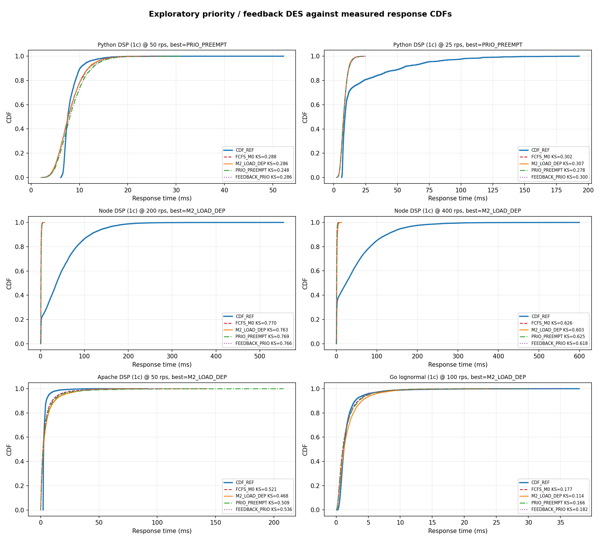

11server configurations
5runtime families
3model families tested
1unexpected modelling pivot
How the platform, server catalogue, data pipeline, DES validation, and research pivot developed across Thesis B.
The first goal was to predict response-time distributions from measured traces.
Given a measured trace of a containerised service, can we predict what happens as load increases, and can we tell which modelling assumption breaks when prediction fails?
A runnable Docker lab where students can observe queueing behaviour, saturation, response-time CDFs, service-time distributions, and DES validation on their own machine.
A controlled experimental platform for testing where classical queueing models work, where they fail, and what corrections are needed for real containerised services.
Dashboards show latency and CPU symptoms, but not which queueing assumption failed.
Autoscalers often react after overload. A model can forecast SLO risk before queues build.
Industry SLOs often care about p95/p99; Thesis B validates full CDFs, but does not yet do a separate tail-latency study.
Go, Apache, Node, Python, Java, and SQLite do not expose the same queueing structure.
Some failures need load-dependent service time; others need split queues or tandem queues.
A small local lab lets these effects be measured and taught without production infrastructure.
Prometheus/Grafana can show CPU and latency rising, but not which queueing assumption broke.
Kubernetes HPA scales after CPU or latency crosses a threshold, so queues may already be building.
The same load can mean CPU contention, runtime warmup, database locking, or split queues.
Capacity decisions need more than mean latency; CDF validation is a step toward tail/SLO analysis.
ML can predict a known regime but may not explain why the system saturates or where it will fail.
The goal became: combine real traces, queueing theory, and simulation into an interpretable workflow.
| Thesis A plan | Thesis B outcome | Status |
|---|---|---|
| Build a Docker microservice platform and run repeatable load tests | Expanded into 11 Docker server configurations with pinned CPU, Poisson load, and request-level traces | Exceeded |
| Validate single-server M/G/1 DES against measured traces | Implemented trace-driven DES and CDF/KS validation across multiple servers | Complete |
| Extend DES to multi-server / M/G/c cases | Implemented M/G/c validation and found where shared-queue M/G/c is valid or invalid | Complete + diagnostic |
| Use ML to learn service-time distributions | Pivoted: flexible ML was replaced by interpretable service-time models after mean service time showed structured load dependence | Changed direction |
| Forecast arrivals and build hybrid ML-DES | Not implemented yet; reframed as Thesis C/future work where ML forecasts lambda and DES predicts SLO risk | Deferred |
| Create educational/reproducible artefacts | README, project map, generated plots, thesis chapters, browser slide deck, and reproducible analysis scripts | Mostly complete |
DSP-AES was repeated across languages so differences could be attributed to runtime/concurrency, not application logic.
CPU-bound DSP exposes processor scheduling; SQLite exposes database locks and I/O waiting.
One pinned CPU core makes saturation and scheduling effects easier to observe.
Three-worker versions test whether M/G/c with shared workers is the right abstraction.
Python 1c and some low-load cases should behave closer to constant service time.
Node cluster and SQLite were likely to expose architectures beyond a single shared queue.
AES decrypt, FIR filter, AES encrypt across Apache, Go, Node, Python, Java.
Go service backed by SQLite/WAL, exposing hidden database-lock behaviour.
Node cluster, Python Gunicorn workers, Java thread pool, Go SQLite WAL.
Poisson arrivals at fixed rates to match the M/G/c arrival assumption.
Per-request arrival, service, queue, response, and status code.
CDF overlays and KS distance for replay, bootstrap, parametric, and fitted load-dependent modes.
| Server | Reason it was included | Question it tests |
|---|---|---|
| Go lognormal | Controlled synthetic service-time workload | If programmed service is fixed, does measured service stay fixed? |
| Apache DSP | Classic OS-process-per-request architecture | What happens when many processes compete on one pinned CPU? |
| Apache MSG | Shared file/message backend | Can hidden shared resources distort response-time CDFs? |
| Node DSP 1c | Single event loop server | How does an event-loop runtime compare to process/thread models? |
| Python DSP 1c | GIL/serial execution control case | Does serialised execution behave closer to M0? |
| Java DSP | JVM/thread-pool server | Does JVM warmup affect service-time measurements? |
| Go SQLite | Application plus database lock | Does a database-backed service still look like one queue? |
Python's Global Interpreter Lock allows only one thread to execute Python bytecode at a time. In the 1-worker case, this suppresses CPU competition.
Just-In-Time compilation lets the JVM compile hot code paths while the experiment runs, so early requests can be slower than later ones.
SQLite Write-Ahead Logging improves concurrency, but write/lock paths can still serialise internally and create a hidden queue.
A request passes through two queues in sequence, e.g. application worker first, database lock second. A single M/G/c model cannot represent both stages.
cpus limits share; cpuset pins cores. Both were needed so "1-core" actually meant one physical core.
Only one target server should run during measurement to avoid cross-container CPU contention.
Containers write per-request CSV traces into data/live_logs/ for later analysis.
The Apache config must be mounted as a file, not accidentally created as a directory. This caused an earlier Docker startup error.
| Step | Folder / script | Output |
|---|---|---|
| 1. Start container | docker-compose.yml, servers/ | Target service running on a pinned port/core set |
| 2. Generate load | analysis/load/, analysis/orchestration/run_sweeps.py | Poisson request stream at chosen rates |
| 3. Collect traces | data/experiments/ | Per-request arrival, service, queue, response, status |
| 4. Run DES | analysis/des/ | Simulated response traces and KS values |
| 5. Plot/report | analysis/reporting/, results/ | CDF overlays, fit plots, tables, README summaries |
| Mode | Service-time source | What it diagnoses |
|---|---|---|
| Replay | Observed values reused from the trace | Whether the queueing structure is right |
| Bootstrap | Random resample from observed service times | Sensitivity to sample variance |
| Parametric | Sample from fitted lognormal/gamma/weibull | Whether the distribution family is adequate |
| M0/M1/M2/M3 | Service mean set by fitted load model | Whether load-dependent service improves response CDFs |
| Concern | Code anchor | Why it matters |
|---|---|---|
| Correct timing stamps | servers/apache_dsp_aes/index.php:3,165,217; servers/node_dsp_aes/server.js:133,160-187 | Separates request start from workload start/end, avoiding the early handler-time mistake. |
| Safe trace writing | servers/apache_dsp_aes/index.php:44-57; servers/python_dsp_aes/app.py:83-98 | CSV rows are written consistently; worker races do not corrupt logs. |
| Docker controls | docker-compose.yml:56-68; docker-compose.yml:181-182 | Apache mounts are explicit, and 1c/3c runs use CPU pinning plus quota. |
| Trace schema and replay | analysis/orchestration/run_sweeps.py:83,131; analysis/des/single_server_des.py:202-212 | Runs produce normalised traces, copy them into experiment folders, sort arrivals, and filter non-2xx rows. |
| DES response calculation | analysis/des/single_server_des.py:272-311; analysis/des/multi_server_des.py:250-277 | Simulates FCFS start, finish, queue time, and response time from observed arrivals. |
| Model/statistical tests | analysis/des/fit_service_time.py:54-136; analysis/des/des_m0_m1_m2_compare.py:220-320; analysis/des/anova_service_time.py:8-114 | Fits service-time models, compares response CDFs by KS, and tests service-time dependence by arrival rate. |
HTTP 200 was not enough; the server returned a default page instead of executing the workload.
Instrumentation initially measured too much of the HTTP path as service time.
Apache workers corrupted shared CSV logs until writes were protected with locking.
Rejected 503 requests had to be filtered or saturation looked artificially fast.
JIT compilation created a decreasing service-time artefact.
Three workers were not one shared M/G/3 queue; routing creates split queues.
| Area | Delivered | Why it matters |
|---|---|---|
| Servers | 11 Docker configs across Go, Apache/PHP, Node, Python, Java, SQLite | Broad enough to compare runtime/concurrency behaviour |
| DES | M/G/1 and M/G/c replay engines with KS validation | Separates queueing-model mismatch from distribution mismatch |
| Results | Cross-server figures, CDF overlays, fit tables, ANOVA table | Evidence is reproducible and inspectable |
| Docs | Thesis B chapters, README, project map, research journey | The discovery path is now part of the thesis narrative |
The standard model treats service times as independent of arrival rate.
Replay mode removes arrival-process error by using the actual trace arrival sequence.
If the CDFs match, the queueing abstraction is probably adequate.
If the CDFs do not match, the failure points to a hidden queue, wrong worker structure, or changing service time.
The load-dependent service model was introduced after baseline mismatch appeared in real traces.
The discovery came from debugging failed M/G/c predictions, not assuming load dependence at the start.
KDE, GMM, or learned regressors would model service-time distributions from traces.
The distribution shape was often stable, while the mean moved systematically with utilisation.
Many service-time distributions remained roughly lognormal/right-skewed.
The dominant effect was not arbitrary distribution shape; it was mean inflation.
Nominal utilisation rho0 explained much of the change.
OS/runtime scheduling gave a physical explanation for wall-clock inflation.
A two-parameter model was more interpretable than KDE/GMM black-box fitting.
Forecasting future arrival rate remains an ML/time-series problem.
This is the industrial scaling story: feedforward autoscaling instead of reactive threshold scaling.
The M/G/c constant-service-time assumption is not always valid for real containerised services.
Wall-clock service time can include scheduler delay when request handlers compete for pinned CPU cores.
| Model | Formula | Meaning |
|---|---|---|
| M0 | E[S] = S0 | Classical constant service time |
| M1 | E[S] = S0 + alpha*rho0 | Linear empirical growth |
| M2 | E[S] = S0 / (1 - beta*rho0) | Original hyperbolic PS-motivated fit |
| M3 | E[S] = S0*(1 + theta*rho0/(1-rho0)) | Base work plus CPU-contention penalty |
M3 avoids claiming there is literally a Processor-Sharing queue inside FCFS. It is a reduced-form contention correction.
M2=0.4940, M3=0.4955.M2=0.3727, preempt=0.4054, feedback=0.4215.
Apache DSPGo lognormalNode 1cPython 3c

Figure: service-time fit across servers.
This is the strongest innovation case: M0 fails, so a load-dependent model is needed.


The log transform is used because service-time distributions are right-skewed / approximately log-normal.
| Server | Effect size eta² | Interpretation |
|---|---|---|
| Apache DSP 1c | 0.3074 | strong violation |
| Node DSP 1c | 0.1042 | meaningful |
| Go 1c | 0.0339 | smaller but clear |
| Python DSP 3c | 0.0268 | modest |
Observed: M/G/3 DES stayed high-KS even after using c=3 and fitted service times.
Reason: Node cluster routes requests into separate worker event loops, so arrivals are split across 3 M/G/1 queues rather than sharing one queue.
Observed: Service mean was not enough to explain heavy tails and irregular CDF mismatch.
Reason: requests wait first for the Go worker, then again inside SQLite/WAL locks, so the path is a two-stage tandem queue.
Observed: service time decreased after early requests instead of increasing with load.
Reason: JIT compiles hot code paths during warmup, so later requests run faster. That is a runtime phase change, not queue growth.
| Case | Evidence observed | Conclusion |
|---|---|---|
| Apache DSP | Mean service time rises strongly; histograms gain heavy right tails; M2 beats M0 in CDF | CPU time-sharing between OS processes inflates wall-clock service |
| Go lognormal | Programmed service distribution is fixed but measured wall-clock service shifts with load | Runtime scheduling delays are inside the measured service interval |
| Python 1c | Mean service time nearly flat; small ANOVA effect size; GIL serialises Python execution | Useful constant-service control case |
| Java DSP | Service time can decrease after early requests; behaviour follows warmup rather than queue growth | JIT phase change, not load-dependent queueing |
| Node 3c | High KS remains even with correct worker count | Architecture is split queues, not shared M/G/3 |
| Go SQLite | Single-stage DES cannot explain tails; database lock/WAL path is hidden from app queue | Needs tandem queue model |
| Architecture | Observation | Model implication |
|---|---|---|
| Apache prefork | Large service-time inflation with load | M0 fails; PS-like M2 is useful |
| Python 1c / GIL | Service time nearly constant | Good M0 control case |
| Python 3c | Small but meaningful service-time growth | M2 can improve response CDF at higher rates |
| Go lognormal | Programmed workload still inflates in wall-clock time | Runtime scheduling matters |
| Node cluster | High KS persists despite worker count | Shared M/G/3 is wrong abstraction |
| Go SQLite | Single-stage queue cannot explain all tails | Tandem queue / WAL lock model needed |
Per-request service-time traces show rate-dependent shifts.
Service-time histograms show centre/tail movement with arrival rate.
CDF_M2 improves over CDF_M0 in key response-time cases.
ANOVA on log(service_ms) rejects independence for affected workloads.
OS/runtime scheduling explains why wall-clock service time inflates.
Java, Node cluster, and SQLite clarify where the model does not apply.
Predict unseen arrival rates by solving rho* = lambda E[S](rho*) / c.
Use ARIMA/Prophet for future lambda, then feed DES for proactive scaling.
Priority classes, tandem queue, or retry-feedback loop.
Standard M/G/c works only when service time is exogenous. In real containerised runtimes, service time can itself become load-dependent.
The value of Thesis B is identifying when this happens, why it happens, and how to correct the DES when M0 fails.